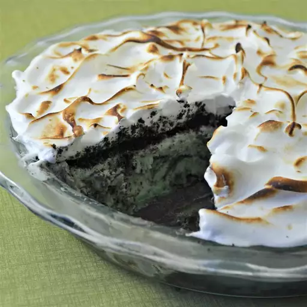

Chocolate Mint Pie

Description:
A pie, made with chocolate and mint.
Ingredients:
- 1 1/2 cups crushed chocolate sandwich cookies
- 1/4th cup of melted butter
- 1 quarter of mint chocolate chip ice cream
- 4 tablespoons of creme de menthe liqueur
- 1 cup of crushed chocolate sandwich cookies
- 3 egg whites
- Salt to taste
- 1/4th teaspoon of tartar cream
- 2 teaspoons of creme de menthe liqueur
- 1/3rd cup of white sugar
Steps:
- Combine 1 1/2 cups cookie crumbs and melted butter or margarine. Press firmly over bottom and up the sides of a 9 inch pie pan. Freeze.
- Spread half of softened ice cream in crust. Drizzle 2 tablespoons creme de menthe and sprinkle 1/2 cup cookie crumbs over the ice cream. Repeat. Freeze till firm.
- In a clean bowl, beat egg whites until foamy. Add salt and cream of tartar, and beat until slightly stiff. Gradually beat in sugar until peaks form. Fold in 2 teaspoons creme de menthe. Spread meringue over pie, and seal to edges. Freeze up to 24 hours.
- Just before serving, broil until top is golden.
Back to List of Recipes